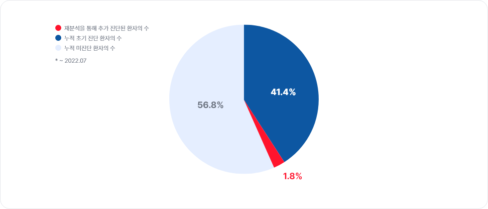

자동 재분석 시스템
미진단 환자를 위한자동 재분석 시스템
왜 미진단 환자 데이터를
재분석 하나요?
낮은 초기 진단율을 극복하기 위해
환자들은 희귀질환에 대한 기술적, 지식적 한계로 인한 낮은 초기 진단율로 인해 여러 병원을 전전하여 평균 5-7년의 방랑으로 어려운 시간을 보내게 됩니다. 주기적인 재분석은 30%~40% 수준의 초기 진단율을 20% 가량 향상시킬 수 있어, 환자들이 더 빠른 진단으로 치료와 처치에 이를 수 있습니다. (Schobers, 2022)최신의 연구 결과를 반영하기위해
연간 200~300개의 새로운 유전성 희귀질환에 대한 연구 결과가 발표되고 있습니다. 미진단 환자의 첫 검사 시점에는 알려지지 않았던 새로운 연구결과를 반영하여 변이를 다시 분석하는 것은 진단에 도움이 됩니다.환자의 새로운 증상을 반영해 정확한 진단을 제공하기 위해
시간이 흐름에 따라 환자의 증상의 정도가 달라지거나 새로운 증상이 나타날 수 있습니다. 지속적으로 증상 정보를 업데이트 하는 것은 정확한 진단 결과를 제공하는데 도움이 됩니다.재분석은 이렇게 진행됩니다.
쓰리빌리언의 검사를 시행했으나 병원성 변이를 찾지 못 할 경우, 해당 샘플은 자동 재분석 파이프라인을 통해 매일 재분석됩니다.
재분석을 통해 결과가 처음과 달라질 경우, 임상유전학자의 manual curation을 거쳐 재분석 결과를 의료진에게 전달합니다.
1차 리포트
DB 및 환자 증상
업데이트
재분석
최종 리포트
최신 연구결과 반영
쓰리빌리언의 재분석 시스템은 완전 자동화되어 있습니다. 최신의 연구 결과를 반영하여 환자의 유전정보를 재분석합니다.새로운 증상 정보 반영
환자의 새로운 증상을 발견했다면 의사가 직접 쓰리빌리언에 전달합니다. 쓰리빌리언은 새로운 증상 정보로 다시 분석을 진행합니다.재분석 사례
쓰리빌리언의 재분석 기술은 지금도 의료진과 환자가 답을 찾을 수 있도록 돕고 있습니다.
현재 쓰리빌리언에서는 10,000건 이상의 미진단 케이스에 대한 재분석이 매일 진행되고 있습니다.
2020.11.17
3B-EXOME proband 주문2020.12.03
첫 검사 결과지 결과: VUS (임상적으로 의미 있는 변이 없음)자동 재분석 시스템 시작
2021.03.09
OMIM에 VCTERL (Vertebral, cardiac, tracheoesophageal, renal and limb defects)등재2021.03.15
6일 후 환자가 VCTERL 질환으로 Positive 진단환자의 진단을 끝까지 책임지는 기술
재분석 시스템은 ‘미진단 환자의 진단을 어떻게 끝까지 책임질 수 있을까?’, ‘어떻게하면 한 사람이라도 더 해답을 찾게 도울 수 있을까?’ 라는 고민에서 시작되었습니다. 쓰리빌리언은 재분석을 통해 미진단 환자와 담당 의료진에게 최신의 검사 결과를 제공하며, 전체 진단의 약 3%를 재분석 시스템을 활용해 만들어내고 있습니다.
